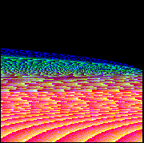

戴天時 (Dai, Tian-Shyr)
Higher Education
Positions Held
- Professor
(2013-present),
Department of Information Management and Finance,
National Yang Ming Chiao Tung University
- 執行長
(2025-present),
Executive Master of Business Administration,
National Yang Ming Chiao Tung University
- 理事
(2021-Present),
FeAT 台灣財務工程學會
- 研究員
(2020-Present),
台灣AI卓越中心
- 研究員
(2020-Present),
人工智慧普適研究中心 PAIR Labs
- 研究員
(2020-Present),
國立政治大學商學院金融研究中心
- 研究員
(2023-Present),
數位金融創新實驗室
- 研究委員
(2022-Present),
政治大學商學院 風險與保險研究中心
- 學術顧問
(2022-Present),
台灣量化交易協會
- Senior Fellow
(2021-Present),
Advance Higher Education
- Faculty Membership
(2021-Present),
Beta Gamma Sigma
- Associate Dean
(2016-2022),
College of Management,
National Chiao Tung University
- 理事
(2018-2020),
台灣商管學會,
- Chairman
(2016-2019),
Department of Information Management and Finance,
National Chiao Tung University
- 財會學門複審委員
(2016-2018),
科技部,
- 公共債務管理委員會委員
(2015-2017),
新竹市政府,
- Director
(2014-2019),
Institute of Finance,
National Chiao Tung University
- Associate Professor
(2009-2013),
Department of Information and Financial Management,
and
Institute of Finance,and
Institute of Information Management,
National Chiao Tung University
- Assistant Professor
(2006-2009),
Department of Information and Financial Management,
and Institute of Information Management,
National Chiao Tung University
- Assistant Professor
(2004-2006),
Department of Applied Mathematics,
Chuan Yuan Christian University
Honors and Awards
- Pricing Path-Dependent Derivatives. 第十三屆龍騰論文獎經營管理類金質獎。
- “Efficient Algorithms for Average-Rate Options pricing”. 1999年全國計算機會議最佳論文獎
- “Efficient Algorithms for Average-Rate Options pricing”. 2000年中華民國電腦學會論文獎資訊科學類優等獎.
- “使用多層解析格子樹模型評價亞式選擇權的精確演算法”2003年富邦金融研究勤工獎。
- Dai, T.-S., Y. D. Lyuu ,and Jerry Shea. “The Trino-binomial Tree Model: A Simple, and Efficient Tree Model”. Asian FA/FMA 2006 Meeting, Auckland, New Zealand, Jul. 2006. (Winner of the University of Rhode Island best paper awards)
- 95學年度績優導師
- Dai, T.-S. C. J. Wang, and , Y. D. Lyuu "A Multi-Phase, Flexible, and Accurate Lattice for Pricing Complex Derivatives with Multiple Market Variables." the Best paper award, the IEEE Conference on Computational Intelligence for Financial Engineering & Economics (CIFEr), New York City, March 29–30, 2012.
- 臺大管理論叢之論文＿以LMM利率模型評價利率衍生性商品：結合節點二項樹方法聯電經營管理論文獎＿優等獎
- CLOUD ASSET PRICING TREE (CAPT) - ELASTIC ECONOMIC MODEL FOR CLOUD SERVICE PROVIDERS
Soheil Qanbari, Fei Li, Schahram Dustdar and Tian-Shyr Dai
The 5th International Conference on Cloud Computing and Services Science. BEST STUDENT PAPER AWARD
- Evaluating Corporate Bonds and Analyzing Market Participants Behaviors with Complex Debt Structure
Tian-Shyr Dai, Chuan-Ju Wang, and Liang-Chih Liu
2015 FMA Annual Meeting. Best Paper Award in Derivatives
- Evaluating Corporate Bonds and Analyzing Market Participants Behaviors with Complex Debt Structure
戴天時、王釧茹、劉亮志
第十屆證券暨期貨金椽獎-研究發展論文甄選學術組優等獎
- Non-Financial Firms’ Issuance Strategies of Contingent Capitals, their Pops and Cons, and Solutions to Asset Substitutions
劉亮志、周蕾、戴天時 【2019TFA 研討會】 Best paper award
- Solving Unconverged Learning of Pairs Trading Strategies with Representation Labeling Mechanism Wei-Lun Kuo, Tian-Shyr Dai and Wei-Che Chang MUFin21 workshop at CIKM2021
(Best Paper award)
- Call Protection, Financial Flexibility, and Debt Maturity Decision 劉亮志、周蕾、戴天時、曾俊凱 【2024TFA 研討會】
(Best Paper award)
Research
Seminar
Course Information
-
游竣瑜
Performance Analysis Comparison of Pair Trading Models and Discussion of Option Pricing Using Neural Networks
-
游仲斐
-
汪文豪
Optimization Methods for Zero-Shot Retrieval-Augmented Generation in Large Language Models
-
邢子謙
Day Trading of Single Stock Using AR Model and Option Pricing Using Neural Networks
-
何維
-
梁嘉程
-
鄭宇翔
-
黃鈺婷
-
黃子騏
-
陳家祺
-
張祐慈
-
李昀庭
more...
Medias
Other Docs
Photos
Electronically
Yours,

Tian-Shyr Dai
(cameldai @ mail.nctu.edu.tw or cameldai @ nycu.edu.tw)
Dept. Information and Financial Management
National Yang Ming Chiao Tung University
No. 1001, Ta Hsueh Road,
Hsinchu, Taiwan 300, ROC.
Office: 管一 422室
886-3-571-2121 ext. 57054 (office)